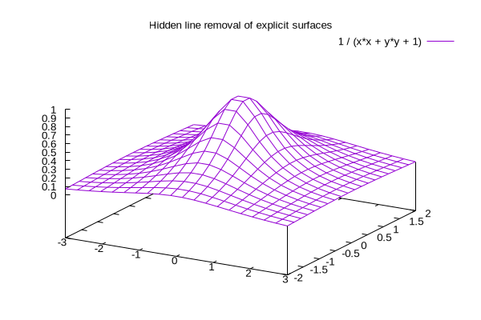

:Open https://github.com/pandoc-ext/diagram/blob/985ff8299caf4fe0d11ce94de507765bc6eb1c10/_extensions/diagram/diagram.lua#L627
:Open https://codeberg.org/cdsoft/panda/src/branch/master/src/panda.lua
``` {#id0 .stitch inc="cbx:fcb out!csv"}
#! /usr/bin/env bash
# https://www.iana.org/assignments/iana-ipv4-special-registry/iana-ipv4-special-registry-1.csv
wget -q https://www.iana.org/assignments/iana-ipv4-special-registry/iana-ipv4-special-registry-1.csv -O -
```
Address Block,Name,RFC,Allocation Date,Termination Date,Source,Destination,Forwardable,Globally Reachable,Reserved-by-Protocol
0.0.0.0/8,"""This network""","[RFC791], Section 3.2",1981-09,N/A,True,False,False,False,True
0.0.0.0/32,"""This host on this network""","[RFC1122], Section 3.2.1.3",1981-09,N/A,True,False,False,False,True
10.0.0.0/8,Private-Use,[RFC1918],1996-02,N/A,True,True,True,False,False
100.64.0.0/10,Shared Address Space,[RFC6598],2012-04,N/A,True,True,True,False,False
127.0.0.0/8,Loopback,"[RFC1122], Section 3.2.1.3",1981-09,N/A,False [1],False [1],False [1],False [1],True
169.254.0.0/16,Link Local,[RFC3927],2005-05,N/A,True,True,False,False,True
172.16.0.0/12,Private-Use,[RFC1918],1996-02,N/A,True,True,True,False,False
192.0.0.0/24 [2],IETF Protocol Assignments,"[RFC6890], Section 2.1",2010-01,N/A,False,False,False,False,False
192.0.0.0/29,IPv4 Service Continuity Prefix,[RFC7335],2011-06,N/A,True,True,True,False,False
192.0.0.8/32,IPv4 dummy address,[RFC7600],2015-03,N/A,True,False,False,False,False
192.0.0.9/32,Port Control Protocol Anycast,[RFC7723],2015-10,N/A,True,True,True,True,False
192.0.0.10/32,Traversal Using Relays around NAT Anycast,[RFC8155],2017-02,N/A,True,True,True,True,False
"192.0.0.170/32, 192.0.0.171/32",NAT64/DNS64 Discovery,"[RFC8880][RFC7050], Section 2.2",2013-02,N/A,False,False,False,False,True
192.0.2.0/24,Documentation (TEST-NET-1),[RFC5737],2010-01,N/A,False,False,False,False,False
192.31.196.0/24,AS112-v4,[RFC7535],2014-12,N/A,True,True,True,True,False
192.52.193.0/24,AMT,[RFC7450],2014-12,N/A,True,True,True,True,False
192.88.99.0/24,Deprecated (6to4 Relay Anycast),[RFC7526],2001-06,2015-03,,,,,
192.88.99.2/32,6a44-relay anycast address,[RFC6751],2012-10,N/A,True,True,True,False,False
192.168.0.0/16,Private-Use,[RFC1918],1996-02,N/A,True,True,True,False,False
192.175.48.0/24,Direct Delegation AS112 Service,[RFC7534],1996-01,N/A,True,True,True,True,False
198.18.0.0/15,Benchmarking,[RFC2544],1999-03,N/A,True,True,True,False,False
198.51.100.0/24,Documentation (TEST-NET-2),[RFC5737],2010-01,N/A,False,False,False,False,False
203.0.113.0/24,Documentation (TEST-NET-3),[RFC5737],2010-01,N/A,False,False,False,False,False
240.0.0.0/4,Reserved,"[RFC1112], Section 4",1989-08,N/A,False,False,False,False,True
255.255.255.255/32,Limited Broadcast,"[RFC8190]
[RFC919], Section 7",1984-10,N/A,False,True,False,False,True
| Address Block | Name | RFC | Allocation Date | Termination Date | Source | Destination | Forwardable | Globally Reachable | Reserved-by-Protocol |
|---|---|---|---|---|---|---|---|---|---|
| 0.0.0.0/8 | "This network" | [RFC791], Section 3.2 | 1981-09 | N/A | True | False | False | False | True |
| 0.0.0.0/32 | "This host on this network" | [RFC1122], Section 3.2.1.3 | 1981-09 | N/A | True | False | False | False | True |
| 10.0.0.0/8 | Private-Use | [RFC1918] | 1996-02 | N/A | True | True | True | False | False |
| 100.64.0.0/10 | Shared Address Space | [RFC6598] | 2012-04 | N/A | True | True | True | False | False |
| 127.0.0.0/8 | Loopback | [RFC1122], Section 3.2.1.3 | 1981-09 | N/A | False [1] | False [1] | False [1] | False [1] | True |
| 169.254.0.0/16 | Link Local | [RFC3927] | 2005-05 | N/A | True | True | False | False | True |
| 172.16.0.0/12 | Private-Use | [RFC1918] | 1996-02 | N/A | True | True | True | False | False |
| 192.0.0.0/24 [2] | IETF Protocol Assignments | [RFC6890], Section 2.1 | 2010-01 | N/A | False | False | False | False | False |
| 192.0.0.0/29 | IPv4 Service Continuity Prefix | [RFC7335] | 2011-06 | N/A | True | True | True | False | False |
| 192.0.0.8/32 | IPv4 dummy address | [RFC7600] | 2015-03 | N/A | True | False | False | False | False |
| 192.0.0.9/32 | Port Control Protocol Anycast | [RFC7723] | 2015-10 | N/A | True | True | True | True | False |
| 192.0.0.10/32 | Traversal Using Relays around NAT Anycast | [RFC8155] | 2017-02 | N/A | True | True | True | True | False |
| 192.0.0.170/32, 192.0.0.171/32 | NAT64/DNS64 Discovery | [RFC8880][RFC7050], Section 2.2 | 2013-02 | N/A | False | False | False | False | True |
| 192.0.2.0/24 | Documentation (TEST-NET-1) | [RFC5737] | 2010-01 | N/A | False | False | False | False | False |
| 192.31.196.0/24 | AS112-v4 | [RFC7535] | 2014-12 | N/A | True | True | True | True | False |
| 192.52.193.0/24 | AMT | [RFC7450] | 2014-12 | N/A | True | True | True | True | False |
| 192.88.99.0/24 | Deprecated (6to4 Relay Anycast) | [RFC7526] | 2001-06 | 2015-03 | |||||
| 192.88.99.2/32 | 6a44-relay anycast address | [RFC6751] | 2012-10 | N/A | True | True | True | False | False |
| 192.168.0.0/16 | Private-Use | [RFC1918] | 1996-02 | N/A | True | True | True | False | False |
| 192.175.48.0/24 | Direct Delegation AS112 Service | [RFC7534] | 1996-01 | N/A | True | True | True | True | False |
| 198.18.0.0/15 | Benchmarking | [RFC2544] | 1999-03 | N/A | True | True | True | False | False |
| 198.51.100.0/24 | Documentation (TEST-NET-2) | [RFC5737] | 2010-01 | N/A | False | False | False | False | False |
| 203.0.113.0/24 | Documentation (TEST-NET-3) | [RFC5737] | 2010-01 | N/A | False | False | False | False | False |
| 240.0.0.0/4 | Reserved | [RFC1112], Section 4 | 1989-08 | N/A | False | False | False | False | True |
| 255.255.255.255/32 | Limited Broadcast | [RFC8190] [RFC919], Section 7 | 1984-10 | N/A | False | True | False | False | True |

``` {#args .stitch}
#!/usr/bin/env bash
echo "0 " $0
echo "1 " $1
```
0 .stitch/args-7c7b89c3cef61c09627daf494e2998ba56d0b559.cb
1 .stitch/args-7c7b89c3cef61c09627daf494e2998ba56d0b559.png

```` {#mark .stitch cmd="" inc="cbx!markdown"}
# Not really a codeblock
but some (generated) markdown instead
straight in the codeblock
## But rather an included markdown doc
with multiple headings
and even an image:
{#nestid caption="nested-cappi"}
```
{#nested .stitch cmd="#cbx 1>#out" ins="out" caption="nested-cappucino"}
#!/usr/bin/env bash
cat $0 | boxes -d peek -p h2v1
```
````
[stitch] stdout - no outputbut some (generated) markdown instead straight in the codeblock
with multiple headings and even an image: 
{#nested .stitch cmd="#cbx 1>#out" ins="out" caption="nested-cappucino"}
#!/usr/bin/env bash
cat $0 | boxes -d peek -p h2v1Inside this para?

``` {#id1 .stitch cfg="boxes" caption="id1-caption"}
#!/usr/bin/env bash
cat $0 | boxes -d peek -p h2v1
```
/* _\|/_
(o o)
+----oOO-{_}-OOo-------------------+
| |
| #!/usr/bin/env bash |
| cat $0 | boxes -d peek -p h2v1 |
| |
+---------------------------------*/``` {#id2 .stitch .bash nou="moe" fmt="stdout" caption="id2-caption"}
#!/usr/bin/env bash
cat $0 | boxes -d peek -p h2v1
```/* _\|/_
(o o)
+----oOO-{_}-OOo-------------------+
| |
| #!/usr/bin/env bash |
| cat $0 | boxes -d peek -p h2v1 |
| |
+---------------------------------*/```{#id3 .stitch not-shown}
#!/usr/bin/env bash
cat $0 | boxes -d peek -p h2v1
``````{#id4 .stitch not-shown}
#!/usr/bin/env bash
cat $0 | boxes -d peek -p h2v1
```
``` {#id5 .lua .stitch} #!/usr/bin/env bash cat $0 | boxes -d peek -p h2v1 ```/* _\|/_ (o o) +----oOO-{_}-OOo-------------------+ | | | #!/usr/bin/env bash | | cat $0 | boxes -d peek -p h2v1 | | | +---------------------------------*/
PING google.com (2a00:1450:400e:80f::200e) 56 data bytes
64 bytes from ams15s44-in-x0e.1e100.net (2a00:1450:400e:80f::200e): icmp_seq=1 ttl=119 time=5.19 ms
64 bytes from ams15s44-in-x0e.1e100.net (2a00:1450:400e:80f::200e): icmp_seq=2 ttl=119 time=4.84 ms
--- google.com ping statistics ---
2 packets transmitted, 2 received, 0% packet loss, time 1001ms
rtt min/avg/max/mdev = 4.843/5.017/5.192/0.174 ms
``` {.stitch cfg="ping" arg="google.com" cid="asdf"}
this codeblock should be ignored
it has no identifier, so files should be x-..
```
Test out some of these plotting tools
:Open https://www.linuxlinks.com/excellent-free-plotting-tools/{#idx
.stitch not-shown}